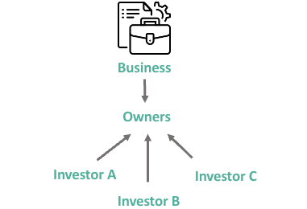
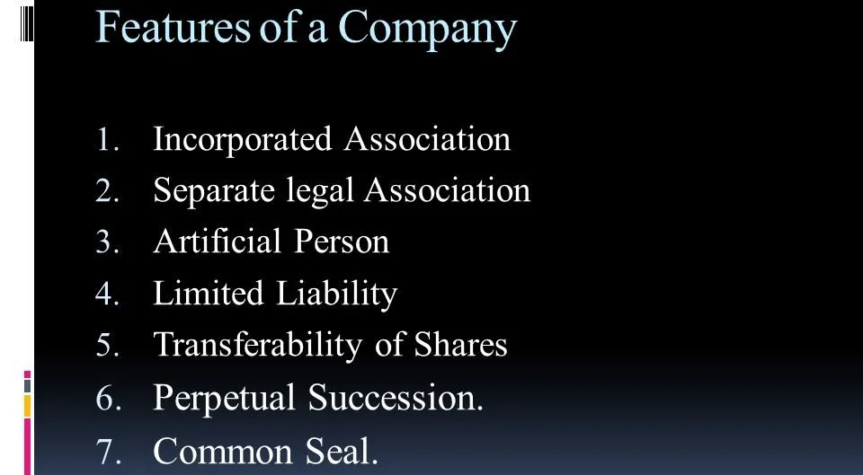
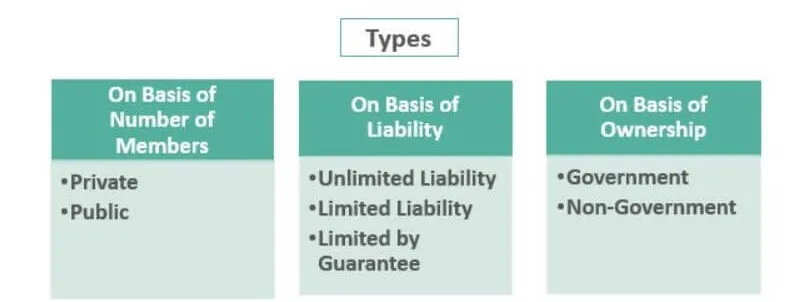

Expanded Nursing Uganda Explanation
Joint Stock Companies should be understood beyond a short definition. Link the concept to patient history, focused assessment, common risks, nursing priorities, documentation and evaluation of outcomes.
01 JOINT STOCK COMPANIES
J oint stock company is a voluntary association of persons incorporated into a business having joint capital divided into transferable shares of a fixed face value, with limited liability of members.
Each of the persons who contribute capital is known as a share-holder. The liability of shareholders of a joint stock company is limited to their capital contribution.
02 Features of a Company:
- Voluntary Association of Persons in Cooperation : A company is formed by the voluntary association of two or more persons who come together to cooperate and work towards a common goal.
- Artificial Person : A company is an artificial person created by law. It is distinct from its owners and has its own legal rights and liabilities.
- Separate Legal Entity : A company is a separate legal entity from its owners. This means that the company can enter into contracts, own property, and sue or be sued in its own name.
- Common Seal : A company has a common seal, which is used to authenticate important documents.
- Limited Liability : Members of a company have limited liability, which means that their personal assets are not at risk if the company incurs debts or losses.
- Transferability of Shares: Shares in a company can be easily transferred from one person to another. This makes it easy for investors to buy and sell shares in the company.
- Assured Perpetual Succession : A company has assured perpetual succession, which means that it continues to exist even if one or more of its members dies or leaves the company.
Additional Features:
- A company can raise capital by selling shares to investors.
- The profits of a company are shared among its shareholders in proportion to the number of shares they hold.
- A company is managed by a board of directors, which is elected by the shareholders.
- A company is required to file annual financial statements with the government.
03 Advantages of Companies
- More Capital : Joint stock companies are in a better position to mobilize large amounts of capital than sole proprietorships and partnerships due to the large number of shareholders who constitute them. This is because companies can issue shares to the public, which allows them to raise large sums of money from a wide range of investors.
- Limited Liability: The liability of the members of a company is limited, which means that their personal assets are not at risk if the company incurs debts or losses. This is a major advantage of companies over sole proprietorships and partnerships, where the owners are personally liable for the debts and losses of the business.
- Continuity : A company is a legal entity that continues to exist even if one or more of its members dies, becomes bankrupt, or withdraws from the company. This is known as the principle of perpetual succession.
- High Profits : Joint stock companies have the potential to generate high profits due to their large scale of operations and economies of scale. They can also benefit from specialization and division of labor, which can lead to increased efficiency and productivity.
- Shares are Freely Transferable: Shareholders of a public limited company can easily sell their shares on the stock exchange market without the consent of other shareholders. This makes it easy for investors to enter and exit the company, which can increase liquidity and attract more investors.
- Strong Financial Position : Companies have a strong financial position because their capital cannot be withdrawn. This means that they can more easily secure loans from banks and other financial institutions.
- Efficient Management: Joint stock companies can employ specialists in different departments, such as managers, accountants, and sales managers. This can lead to more efficient and effective management of the business.
- Different Types of Shares : Companies can issue different types of shares to suit the investment habits of different types of people. This can make it easier for companies to attract a wide range of investors.
- Encourage Savings: People can invest their savings profitably by buying shares in a joint stock company and receiving dividends (profits). This can encourage people to save and invest their money, which can benefit the economy as a whole.
- Security : Public limited companies are required to publish their financial statements to the general public. This can help to protect investors from fraud and other financial irregularities.
- Free Transferability of Shares : Shareholders can easily sell their shares to other investors, which makes it easy for them to exit the company if they wish.
- Large Financial Resources : Companies can raise large amounts of capital from a wide range of investors, which gives them access to significant financial resources.
- Economies of Scale: Companies can achieve economies of scale by producing goods and services on a large scale. This can lead to lower costs and higher profits.
- Public Confidence : Public limited companies are required to publish their financial statements and other information, which can help to build public confidence in the company.
- Tax Benefits : Companies may be eligible for certain tax benefits, such as lower tax rates or investment tax credits.
- Diffused Risks : The risk of loss is spread among a large number of shareholders, which can make it less risky for individual investors.
04 Disadvantages of Companies:
- Delays in Decision Making: Decision-making in companies can be slow and bureaucratic, as it often requires the approval of multiple stakeholders, such as the board of directors and the shareholders.
- Oligarchies in Management : In some companies, a small group of powerful individuals may have too much control over the decision-making process, which can lead to a lack of accountability and transparency.
- Lack of Secrecy: Public limited companies are required to disclose a significant amount of information to the public, which can reduce the company’s ability to keep its business strategies and financial information confidential.
- Difficulty and Costly Formation : Forming a company can be a complex and expensive process, as it requires the preparation of various legal documents and the payment of government fees.
- Lack of Motivation and Personal Attention: In large companies, individual employees may feel less motivated and less connected to the business, which can lead to lower productivity and innovation.
- The Management of Public Companies Lies in the Hands of Hired Professionals : This can lead to a lack of accountability and responsiveness to the needs of shareholders and other stakeholders.
- Excessive Regulations : Companies are subject to a significant amount of government regulation, which can increase the cost of doing business and reduce the company’s flexibility.
- Social Evils : Some companies may engage in unethical or illegal activities, such as pollution, labor exploitation, or tax evasion. This can damage the company’s reputation and lead to legal and financial penalties.
- Conflict of Interest : Directors and managers of companies may have personal interests that conflict with the interests of the company, leading to decisions that benefit them at the expense of the company’s shareholders or stakeholders.
05 Differences between a Registered Company and a Partnership:
- Management : In a registered company, management is delegated to a board of directors, while in a partnership, all general partners share in the management.
- Legal Entity : A registered company is a separate legal entity from its members, while a partnership is not distinct from its members.
- Number of Members : A public company can have 7 or more members, while a private company can have 2 to 50 members. Partnerships are limited to 20 members for non-banking businesses and 10 members for banking businesses.
- Binding Authority : Members of a company cannot bind the company, while partners can enter into contracts on behalf of the partnership.
- Liability : In a company, liability is limited to the amount unpaid on shares or the agreed liability amount. In a partnership, except for limited partners, liability extends to personal assets.
- Profit Distribution : In a company, undistributed profits cannot be added to share capital. In a partnership, partners’ shares of profits can be added to their capital.
- Bookkeeping and Auditing : Registered companies are required to keep prescribed books of account and have annual audited accounts. Partnerships are not subject to these requirements unless agreed upon by the partners.
- Public Inspection of Accounts : Audited accounts and directors’ reports of limited companies are open to public inspection. Partnership accounts are not subject to public inspection.
- Business Scope : Companies can only pursue the objects for which they were formed. Partnerships can carry on any business agreed upon by the partners.
- Continuation : Companies continue to exist despite changes in membership. Partnerships may terminate upon the death of a partner or the introduction of a new partner.
06 I. Companies Incorporated under the Companies Act:
a) Companies Limited by Shares/Ownership:
- Private Limited Liability Companies:
- Limited liability for shareholders
- Minimum of 2 and maximum of 50 shareholders
- Shares are not publicly traded
- Capital raised through sale of shares to family members and friends
- Shares cannot be transferred without the consent of other shareholders
- Public Limited Liability Companies:
- Limited liability for shareholders
- Minimum of 7 shareholders
- Shares are publicly traded
- Company is a separate legal entity from its shareholders
- Capital raised through the sale of shares to individuals
- Shares are freely transferable through the stock exchange market
- Each shareholder has the right to vote in the general meeting
- Accounts, balance sheets, and auditor’s reports must be filed with the Registrar of Companies annually
- Formation requires extensive documentation
- Continued existence, not affected by death, bankruptcy, insanity, or withdrawal of a member
- Majority of shareholders have no say in the day-to-day running of the company, which is handled by directors
- Government Companies:
- Owned and controlled by the government
- Established for public purposes
b) Companies Limited by Guarantee:
A limited liability company (LLC) is a business organization that has some benefits of a corporation and some of a limited partnership.
Liability of members is limited to the amount they guarantee to contribute in the event of winding up. Often used for non-profit organizations, such as charities and clubs.
Advantages of the LLC
- LLCs do not require annual meetings and require few ongoing formalities.
- Owners are protected from personal liability for company debts and obligations.
- LLCs enjoy partnership-style, pass-through taxation, which is favorable to many small businesses.
Disadvantages of the LLC
- LLCs do not have a reliable body of legal precedent to guide owners and managers, although LLC law is becoming more reliable as time passes.
- An LLC is not an appropriate vehicle for businesses seeking to become public eventually, or to raise money in the capital markets.
- LLCs are more expensive to set up than partnerships.
- LLCs usually require annual fees and periodic filings with the state.
- Some states do not allow the organization of LLCs for certain professional vocations.
c) Unlimited Liability Companies
- Not recognized in Uganda
Members have unlimited personal liability for the debts and obligations of the company
Established under specific laws or acts of parliament. Examples: Bank of Uganda, Uganda Revenue Authority, Civil Aviation Authority
Originated from the United Kingdom with permission from the monarch. Examples: BAT Uganda, British South African Company (BSACo), Imperial British East African Company (IBEACo), British East Indian Company (BEICo)
07 Winding Up a Company
Winding up, also known as liquidation, is the process of bringing a company’s life to an end by selling off its property or assets and paying creditors. It can be either voluntary or compulsory.
1. Voluntary Winding Up:
- Initiated by the shareholders or directors of the company
- Shareholders pass a resolution to wind up the company
- Liquidator is appointed to oversee the winding up process
- Liquidator sells the company’s assets and uses the proceeds to pay creditors
- Any remaining assets are distributed to shareholders
2. Compulsory Winding Up:
- Also known as winding up by court order
- Initiated by a petition filed with the court by creditors, shareholders, or other interested parties
- Court appoints a liquidator to oversee the winding up process
- Liquidator sells the company’s assets and uses the proceeds to pay creditors
- Any remaining assets are distributed to shareholders
- Bankruptcy : Inability to pay debts when they become due
- Acting Out of Their Articles of Association : Violating the rules and regulations set out in the company’s articles of association
- Agreement Among the Members to Change Line of Business: Shareholders may agree to change the company’s line of business, which may necessitate dissolution
- Dissolution by Order of Court: Court may order the dissolution of a company for various reasons, such as fraud, mismanagement, or oppression of minority shareholders
08 COOPERATIVES
Click Here
09 Nursing Uganda Clinical Lens
Use Joint Stock Companies as a practical nursing topic, not only a memorized definition. Connect structure, movement, pain, circulation, nerve function and safe mobility.
- What to understand first: define joint stock companies, identify the normal or expected pattern, then explain what changes when the patient is unwell.
- Why it matters in care: the nurse must recognize risk early, explain findings clearly, document accurately and know when to escalate.
- How to revise it: connect each point to assessment, nursing diagnosis or care problem, intervention, rationale and evaluation.
10 Assessment Guide
- Pain score, site, onset, deformity, swelling, bruising and ability to move.
- Distal pulse, capillary refill, colour, warmth, sensation and movement.
- Skin integrity, wounds, cast tightness, traction alignment and pressure areas.
11 Nursing Priorities, Rationales and Outcomes
- Immobilize and protect the affected part while preventing further injury.
- Control pain and swelling while monitoring neurovascular status.
- Prevent complications such as compartment syndrome, infection, pressure injury and venous stasis.
The rationale for these priorities is patient safety: nursing actions should prevent deterioration, reduce discomfort, support recovery and create clear evidence for the next caregiver.
- Expected outcome: Pain is reduced, circulation and sensation remain intact, swelling is controlled and the patient mobilizes safely within the care plan.
12 Patient Teaching and Revision Check
- Explain joint stock companies in simple language the patient or caregiver can repeat back.
- Teach warning signs, medicine or follow-up instructions, hygiene or lifestyle points where relevant.
- For exams, prepare a short answer using: definition, causes or risk factors, signs, assessment, management, complications and prevention.
- For ward practice, document baseline findings, actions taken, patient response and the plan for review.
Illustrations and Diagrams (5)



Related Video Lectures
Watch nursing lecture videos on YouTube for this topic. Opens in a new tab.
Watch on YouTubeExternal link: YouTube may use its own cookies and terms. Nursing Uganda is not affiliated with YouTube.